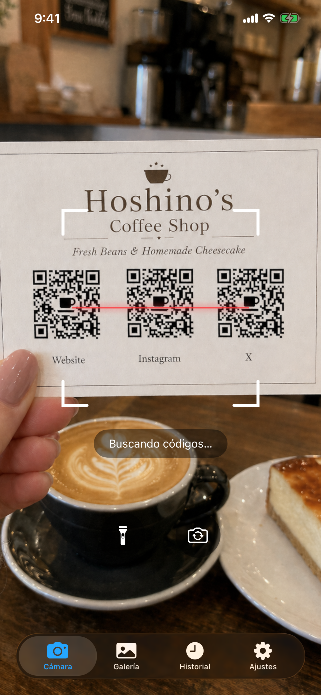
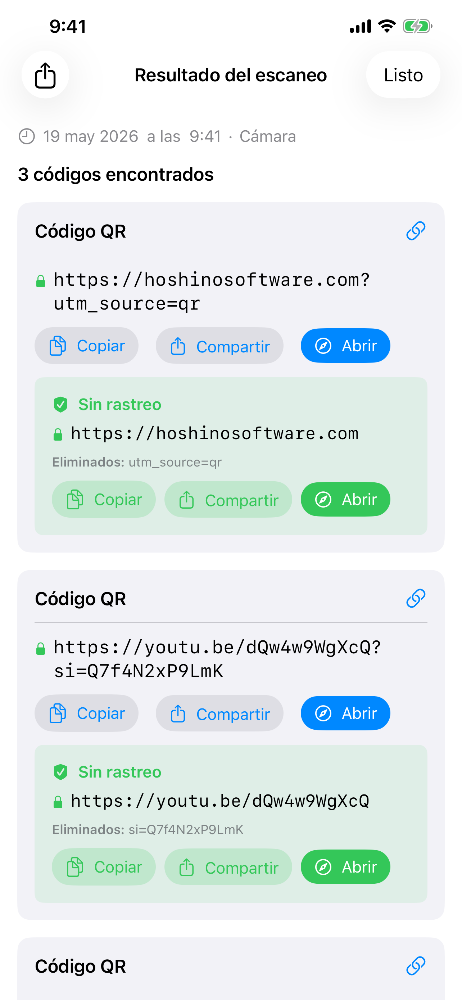
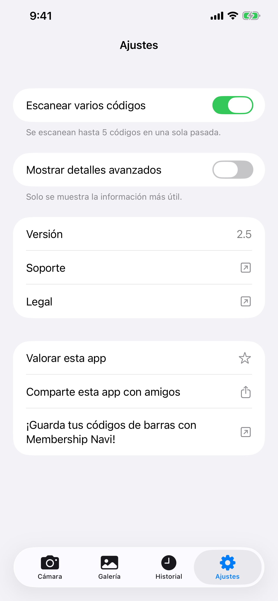

Escáner de Códigos
Escáner de Códigos escanea códigos de barras y QR codes con la cámara de tu iPhone o desde cualquier imagen de tu biblioteca de fotos. Funciona completamente sin conexión, no almacena nada en la nube y nunca muestra anuncios.
Descargar


Escáner de Códigos es gratuito en el App Store. No se requiere cuenta. Requiere iOS 26 o posterior.
Soporte
¿Tienes alguna pregunta, encontraste un error o necesitas ayuda con la app? Contáctanos. Leemos cada mensaje.
Antes de escribir
Muchos problemas comunes están resueltos en el Manual y las preguntas frecuentes a continuación. Algunas comprobaciones rápidas:
- ¿La cámara no funciona? Ve a Ajustes del iPhone → Privacidad y seguridad → Cámara → activa el acceso para Escáner de Códigos.
- ¿No encuentras el historial? Toca la pestaña Historial. Las entradas se conservan 6 meses con un máximo de 1.000.
- ¿El código no se escanea? Asegúrate de tener buena iluminación y mantén el código estable. Prueba el modo Galería si tienes un archivo de imagen.
- ¿La app se bloquea? Ciérrala forzadamente y vuelve a abrirla. Si el problema continúa, escríbenos indicando tu modelo de iPhone y versión de iOS.
Preguntas frecuentes
- ¿Necesita conexión a internet?
No. Escáner de Códigos funciona completamente sin conexión. - ¿Recopila mis datos?
No. Nada se sube a ningún lugar. El historial de escaneos se almacena únicamente en tu dispositivo. - ¿Accede a toda mi biblioteca de fotos?
No. En la pestaña Galería, seleccionas una sola foto usando el selector de fotos del sistema. Escáner de Códigos nunca accede a tu biblioteca. - ¿Por qué el modo multi-código tarda un poco más?
La cámara recopila códigos en una breve ventana de fotogramas para asegurarse de capturar todos los códigos visibles antes de mostrar el resultado. - ¿Cuánto tiempo se conserva el historial de escaneos?
Las entradas con más de 6 meses se eliminan automáticamente. El historial también tiene un límite de 1.000 entradas; las más antiguas se eliminan para dar paso a las nuevas. - ¿Por qué no navega automáticamente a un enlace?
Es intencional. Los QR codes falsos o maliciosos son comunes: en estacionamientos, mesas de restaurantes y otros lugares. Mostrarte la URL antes de abrirla te permite verificar que es segura.
Manual



Cámara
La pestaña Cámara se abre y comienza a escanear de inmediato. Apunta tu teléfono hacia cualquier código de barras o QR code y la app lo detecta automáticamente. Se requiere permiso para la cámara. Si aún no lo has concedido, aparecerá una solicitud. Toca Abrir Ajustes y activa el acceso a la Cámara para Escáner de Códigos.
- Linterna: toca el botón de linterna para iluminar entornos oscuros. Solo disponible con la cámara trasera.
- Cámara frontal: toca el botón de rotación para cambiar entre la cámara trasera y la frontal. Útil cuando la cámara trasera no está disponible (por ejemplo, dañada).
Galería
La pestaña Galería te permite escanear códigos desde una imagen existente. Toca Elegir foto para seleccionar cualquier imagen de tu biblioteca. Solo la foto específica que eliges se comparte con la app. Escáner de Códigos no solicita acceso a toda tu biblioteca de fotos.
Tras seleccionar una foto, la app la escanea y muestra el resultado de inmediato. Si no se encuentra ningún código, una alerta te lo indicará.
Historial
Cada escaneo se guarda automáticamente en la pestaña Historial. Los escaneos se conservan durante 6 meses y el historial almacena hasta 1.000 entradas; las más antiguas se eliminan automáticamente cuando se alcanza el límite.
- Ver un escaneo anterior: toca cualquier fila para volver a abrir el resultado completo.
- Eliminar una entrada: desliza hacia la izquierda en una fila y toca Eliminar.
- Eliminar todo: toca el icono de papelera en la esquina superior derecha.
- Etiqueta de origen: cada entrada indica si proviene de la Cámara, la Galería o un Compartir.
Ajustes
Modo multi-código
De forma predeterminada, Escáner de Códigos se detiene en cuanto encuentra un código. Activa el Modo multi-código para escanear hasta 5 códigos a la vez, útil para tarjetas de visita, fichas de producto o cualquier imagen que contenga varios códigos uno al lado del otro.
Cuando el modo multi-código está activo, la cámara sigue escaneando un breve momento tras la primera detección para recopilar todos los códigos visibles antes de mostrar los resultados. Por eso tarda un poco más que el modo de código único.
Mostrar detalles avanzados
Activa Mostrar detalles avanzados para ver metadatos técnicos junto a cada resultado de escaneo: versión QR, nivel de corrección de errores, patrón de máscara o estructura del código de barras (caracteres de inicio/parada, dígito de comprobación). Esta información se muestra en la página de resultado y en las filas de la pestaña Historial.
Resultados de escaneo
Cuando se detecta un código, Escáner de Códigos te muestra su contenido antes de hacer nada. Siempre ves primero los datos sin procesar, junto con los botones Copiar y Compartir. Si el código contiene una URL (común en los QR codes), aparece un botón Abrir. Al tocarlo se abre el enlace en tu navegador predeterminado, no en un navegador integrado en la app. No se recopilan datos de navegación.
Escáner de Códigos reconoce automáticamente los tipos de código especiales y muestra acciones contextuales:
| Tipo de código | Qué puedes hacer |
|---|---|
| 🌐 URL / Enlace | Abrir en tu navegador predeterminado · Copiar · Compartir |
| 📶 Red Wi-Fi | Conectar directamente · Copiar contraseña |
| 👤 Contacto (vCard / MECARD) | Guardar en Contactos con vista previa |
| 📅 Evento de calendario | Añadir al Calendario |
| ✉️ Correo electrónico | Redactar correo prellenado |
| 💬 SMS / Mensaje | Enviar mensaje |
| 📞 Número de teléfono | Llamar |
| 📍 Ubicación / Geo | Abrir en Mapas |
| 📹 FaceTime | FaceTime o FaceTime Audio |
| ₿ Bitcoin | Copiar dirección |
| ✈️ Tarjeta de embarque | Detalles del vuelo extraídos de Aztec / PDF417 |
Con Mostrar detalles avanzados activado (en Ajustes), aparecen dos secciones adicionales en la página de resultados:
- Datos decodificados: la cadena sin procesar codificada dentro del código de barras, antes de cualquier procesamiento.
- Estructura: desglose técnico del código de barras: caracteres de inicio/parada, dígito de comprobación, patrones de guardia y elementos similares según el tipo de código.
Para los QR codes, también aparecen chips de metadatos que muestran el número de versión, el nivel de corrección de errores y el patrón de máscara.
Detección de parámetros de seguimiento
Cuando una URL contiene parámetros de seguimiento, Escáner de Códigos muestra un botón Abrir sin rastreo. Esto incluye etiquetas UTM e identificadores de clic de Facebook, Google Ads, Microsoft, TikTok y otros. Tócalo para abrir el enlace sin esos parámetros. Llegas a la misma página sin ser rastreado.
Escanear desde otra app
Puedes escanear un código que aparece en una foto dentro de cualquier otra app (un mensaje, correo electrónico, visor de documentos o navegador web) sin salir de esa app.
Usando Compartir:
- Abre la imagen en tu galería o en cualquier app y toca el botón Compartir.
- En la lista de apps que aparece, busca y toca Escáner de Códigos. Si no lo ves, desplázate hasta el final de la lista y toca Más.
- La app se abre y escanea la imagen automáticamente.
Usando Acciones:
- Abre la imagen en tu galería o en cualquier app y toca el botón Compartir.
- Desplázate por la fila de acciones debajo de la lista de apps y toca Scan for Codes.
- La app se abre y escanea la imagen automáticamente.
Widget en la pantalla de inicio
Puedes añadir un widget a tu pantalla de inicio como acceso directo a la app. Al tocarlo se abre la cámara directamente, lista para escanear. Los widgets están disponibles en tres tamaños (pequeño, mediano, grande), así que puedes elegir el que mejor se adapte a tu pantalla de inicio.
- Mantén pulsada un área vacía de tu pantalla de inicio hasta que los iconos comiencen a moverse.
- Toca el botón + en la esquina superior izquierda.
- Busca Escáner de Códigos.
- Elige un tamaño y toca Añadir widget.
- Puedes redimensionarlo más tarde manteniendo pulsado el widget y eligiendo Editar widget.
Control Center
Control Center es el panel que aparece al deslizar hacia abajo desde la esquina superior derecha de la pantalla. Puedes añadir un botón de Escáner de Códigos para abrir la cámara con un solo toque desde cualquier lugar, incluida la pantalla de bloqueo o mientras usas otra app.
- Desliza hacia abajo desde la esquina superior derecha para abrir Control Center.
- Toca el botón + para entrar en el modo de edición.
- Busca Escáner de Códigos en la lista y tócalo para añadirlo.
- Puedes arrastrarlo para reposicionarlo y redimensionarlo en el modo de edición.
Tipos de código compatibles
| Código | Notas |
|---|---|
| QR Code | El código 2D más común. Usado para URL, Wi-Fi, contactos y más |
| Micro QR | Variante compacta del QR Code para etiquetas pequeñas con espacio limitado |
| Aztec | Usado en tarjetas de embarque y billetes de transporte |
| Data Matrix | Común en fabricación, sanidad y logística |
| PDF417 | Usado en licencias de conducir, tarjetas de embarque y etiquetas de envío |
| Micro PDF417 | PDF417 compacto para artículos pequeños como envases farmacéuticos |
| EAN-8 | Código de barras corto para productos pequeños de venta minorista |
| EAN-13 | Código de barras estándar que se encuentra en la mayoría de los productos de consumo del mundo |
| UPC-E | Código de barras compacto usado en pequeños envases minoristas en EE. UU. y Canadá |
| Code 39 | Uno de los códigos de barras más antiguos, común en entornos industriales |
| Code 93 | Sucesor de mayor densidad del Code 39 |
| Code 128 | Código de barras de alta densidad ampliamente usado en logística y envíos |
| ITF-14 | Código de barras de 14 dígitos impreso en cajas de envío de cartón corrugado |
| Codabar | Usado en bibliotecas, bancos de sangre y algunas empresas de envío |
| GS1 DataBar | Código de barras compacto para artículos pequeños como productos frescos |
| GS1 DataBar Expanded | Variante extendida que incluye datos adicionales como peso y fecha de caducidad |
No compatibles:
| Código | Notas |
|---|---|
| EAN-2 / EAN-5 (complementos) | Suplementos cortos de dígitos adjuntos al EAN-13, usados para números de edición de revistas y precios de libros |
| rMQR | Micro QR rectangular, una variante QR compacta más reciente diseñada para etiquetas estrechas |
| MaxiCode | Código de matriz 2D usado por UPS en etiquetas de envío |
| SP Code | Código de barras de accesibilidad japonés que codifica datos de audio hablado |
| Códigos postales | Códigos de barras postales de 4 estados usados por servicios postales nacionales (USPS Intelligent Mail, Royal Mail, Australia Post, Japan Post y otros) |
| Códigos de apps propietarias | Códigos visuales personalizados que solo la app emisora puede escanear |
Códigos de demo
Escanéalos directamente desde esta pantalla con la cámara, o toma una captura de pantalla y usa la pestaña Galería.
 | QR Code URL con parámetros de seguimiento https://hoshinosoftware.com?utm_source=review&utm_campaign=demo |
 | QR Code Red Wi-Fi WIFI:S:example-wifi;T:WPA;P:example-password;; |
 | QR Code Correo electrónico mailto:test@example.com |
 | QR Code Contacto (vCard) BEGIN:VCARD VERSION:3.0 N:Last;First FN:First Last ORG:Company TITLE:Job Title ADR:;;Street;City;CA;90401;USA TEL;WORK;VOICE: TEL;CELL:+1234567890123 TEL;FAX: EMAIL;WORK;INTERNET:example@example.com URL:https://example.com END:VCARD |
 | Micro QR QR compacto para etiquetas pequeñas HELLO |
 | Aztec (Full) Transporte / tarjetas de embarque AZTEC-DEMO-CODE |
 | Aztec (Compact) Variante compacta para etiquetas pequeñas AZTEC-DEMO-CODE |
 | Data Matrix (Square) Fabricación / sanidad DATAMATRIX |
 | Data Matrix (Rectangular) Variante rectangular para etiquetas estrechas DATAMATRIX |
 | PDF417 Documentos de identidad / etiquetas de envío PDF417 SAMPLE DATA |
 | Micro PDF417 PDF417 compacto para artículos pequeños MICROPDF417 SAMPLE DATA |
 | EAN-13 Código de barras de producto minorista 5901234123457 |
 | UPC-E Código compacto minorista (EE. UU./Canadá) 01234565 |
 | Code 128 Logística / envíos CODE-128-DEMO |
 | ITF-14 Código de barras de caja de envío 12345678901231 |
 | GS1 DataBar Código compacto para artículos pequeños 0112345678901231 |
Legal
Política de Privacidad
Última actualización: abril de 2026
Introducción
Escáner de Códigos está construido sobre un principio simple: tus datos te pertenecen. Esta Política de Privacidad explica a qué información accede la app y cómo se gestiona.
Acceso a la cámara
La app usa la cámara de tu dispositivo para escanear códigos de barras y códigos QR en tiempo real. El flujo de la cámara se procesa completamente en tu dispositivo. Ninguna imagen ni fotograma de video se almacena, carga o comparte jamás.
Historial de escaneos
Los resultados de los escaneos se guardan localmente en tu dispositivo usando la tecnología de almacenamiento integrada de Apple. Estos datos nunca salen de tu dispositivo ni se transmiten a ningún servidor. Puedes eliminar tu historial de escaneos en cualquier momento desde la app.
Sin conexión a Internet
Escáner de Códigos funciona completamente sin conexión. La app no realiza ninguna solicitud de red. Tus datos nunca abandonan tu dispositivo.
Sin recopilación de datos
No recopilamos, almacenamos ni procesamos ninguna información personal. La app no requiere cuenta ni ningún tipo de registro.
Servicios de terceros
Escáner de Códigos no usa ningún servicio de análisis, publicidad o seguimiento de terceros. Ningún dato se comparte con terceros.
Privacidad de menores
Dado que no se recopilan datos personales, Escáner de Códigos es seguro para usuarios de todas las edades y cumple con la ley COPPA y regulaciones similares en todo el mundo.
Cambios en esta política
Podemos actualizar esta Política de Privacidad ocasionalmente. Los cambios son efectivos inmediatamente después de su publicación. Te recomendamos revisar esta página periódicamente.
Contáctanos
Para preguntas sobre esta Política de Privacidad: support [at] hoshinosoftware [dot] com
Términos de Servicio
Última actualización: abril de 2026
Aceptación de los términos
Al descargar o usar Escáner de Códigos, aceptas quedar vinculado por estos Términos de Servicio. Si no estás de acuerdo, por favor no uses la app.
Licencia
Hoshino Software te otorga una licencia personal, intransferible y no exclusiva para usar Escáner de Códigos en tus dispositivos Apple, conforme a estos términos y a los Términos de Servicio del App Store de Apple.
Uso permitido
Solo puedes usar Escáner de Códigos con fines legales. Aceptas no usar la app de ninguna manera que viole las leyes o regulaciones aplicables.
Sin garantía
Escáner de Códigos se proporciona "tal cual" sin garantía de ningún tipo, expresa o implícita. No garantizamos que la app esté libre de errores, sea ininterrumpida o adecuada para ningún propósito particular.
Limitación de responsabilidad
En la máxima medida permitida por la ley aplicable, Hoshino Software no será responsable de daños directos, indirectos, incidentales, especiales o consecuentes derivados del uso o imposibilidad de uso de Escáner de Códigos.
Cambios en estos términos
Podemos actualizar estos Términos de Servicio de vez en cuando. El uso continuado de la app tras la publicación de los cambios constituye tu aceptación de los términos revisados.
Ley aplicable
Estos términos se rigen por las leyes de la jurisdicción en la que opera Hoshino Software.
Contáctanos
Para preguntas sobre estos Términos de Servicio: support [at] hoshinosoftware [dot] com